Troubleshooting
Below, are all the common issues that you'll have with your mods:
Issue 1: Texture File Not Found
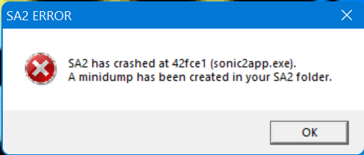 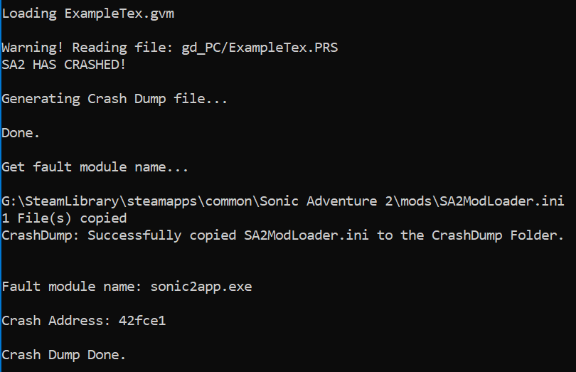
Oh No! Your game has crashed! Something's wrong with your mod!
Not to worry! We have things that we can check!
A common crash would be that the texture file fails to load, and the game crashes. The following would usually resolve the issue:
-
Check if your filename matches what you've written in code.
-
Check if your TexList has enough space to load the texture file.
-
DO NOT rename your texture file! Doing so causes the game to incorrectly find the file, and crashes the game. Instead, use the Save As option in TextureEditor, and make a new texture file with the name as given.
Issue 2: Model File Not Found
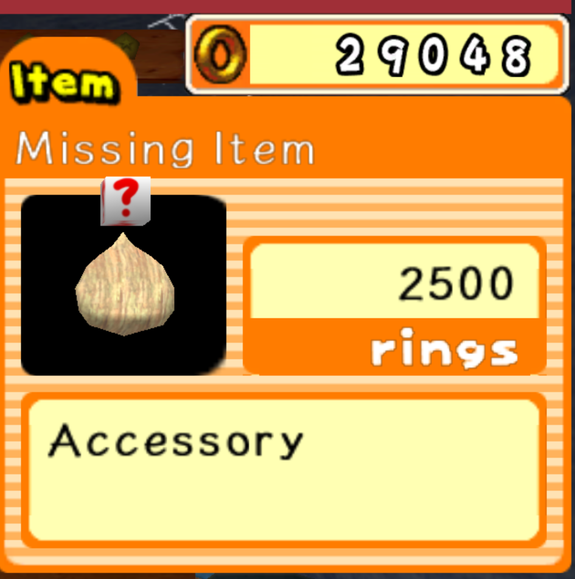
Chao World Extended checks for the model, and if it doesn't load, will give you the above image. This can be a combination of things:
-
The model can't be found in the location you specified. Place your model in the right directory and try again.
-
Make sure your
pathStris pointing to the right place. By default, thepathStrvariable is as follows:
This places it in the same place as where you put your mod.ini file.
Issue 3: Character Chao - texture index is out of bounds
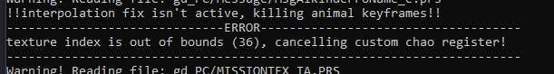
Chao World Extended checks your Character Chao model and it determines that your Texture Index is out of bounds. The following steps are required in order to fix it:
-
Load your texture file into SAIO (If you don't know how to do so, click here!)
-
Once your texture file is loaded, scroll down and look for the last texture in the list. Note down the number, and add 1 to that.

- Now that you've got the amount of textures, update your variable to the noted number.
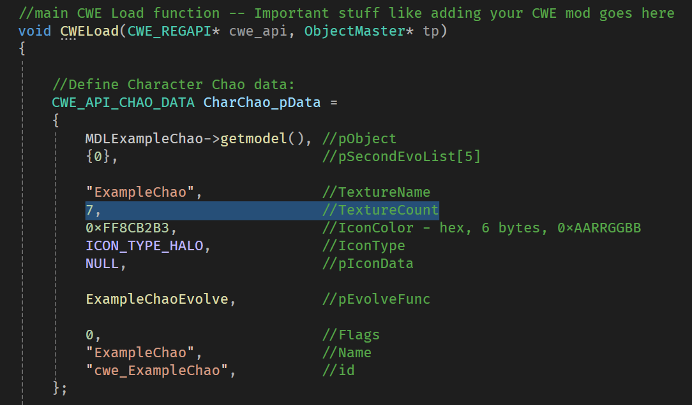
also, check the SAIO Material Properties on every object (including eyes, mouth and wings) and make sure that it is added to the texture file and inside the texture count.
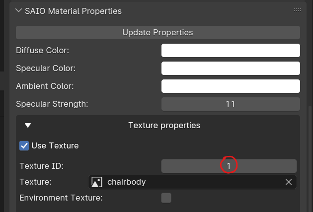
Issue 4: Character Chao - Number of Nodes is not 40
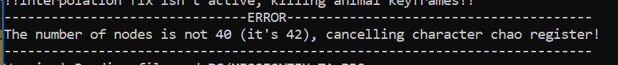
Chao World Extended checks your Character Chao model and it determines your model is not 40 nodes. The following steps are required in order to fix it:
In Blender:
- Turn on statistics in your Overlay Menu:
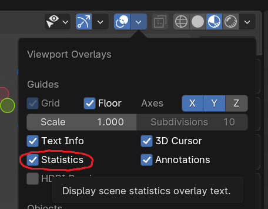
- Look at the total number of Objects. They should be 40, no more and no less!
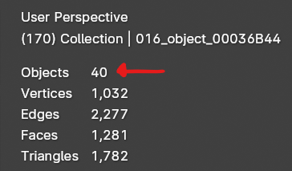
- If you don't have 40 objects, you may not have joined your objects together, or you may have mistakenly joined your objects together. To join objects, press Ctrl+J in Object Mode. to separate objects, press P in Edit Mode.
Note: If you accidentally joined objects from the Chao Model together, you will have to restart from importing the Chao model, as you have destroyed node data that is important for the Chao model to function.
Issue 5: Character Chao - Wrong Chunk Type
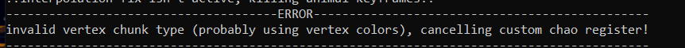
Chao World Extended checks your Character Chao and determines that your model has an invalid vertex chunk type. The following steps are required in order to fix it:
In Blender:
- Go to the Data menu, and open the Color Attributes dropdown. If you see anything in here, remove it by clicking the - button.
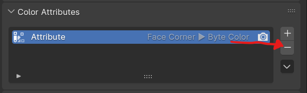
Issue 6: Fruit mods - Size or rotation is weird in Black Market
To Fix this, Import your completed model and apply your transformations.
For Size:
- Apply the Scale transformations by selecting the model in Object mode and pressing Ctrl+A and applying by scale.
For rotation:
- Apply all transformations by pressing Ctrl+A and applying by All.
Note that applying all transformations will move the object origin to 0, 0, 0 in Blender World Space, so make sure your model is centered on the world origin before applying transformations. If your model isn't centered, right click on your model and go to Set Origin -> Origin to Geometry.
Issue 7: Model is invisible in Black Market
This is a known bug in Sonic Adventure 2 where if a model has multiple meshes, the game will not render anything in the Black Market. To fix this:
- Import your completed model into Blender (Remember to remove all other objects beforehand.)
- select all objects
- select your primary object (to be neat about the join you're about to make)
- press Ctrl+J to join all the objects together.